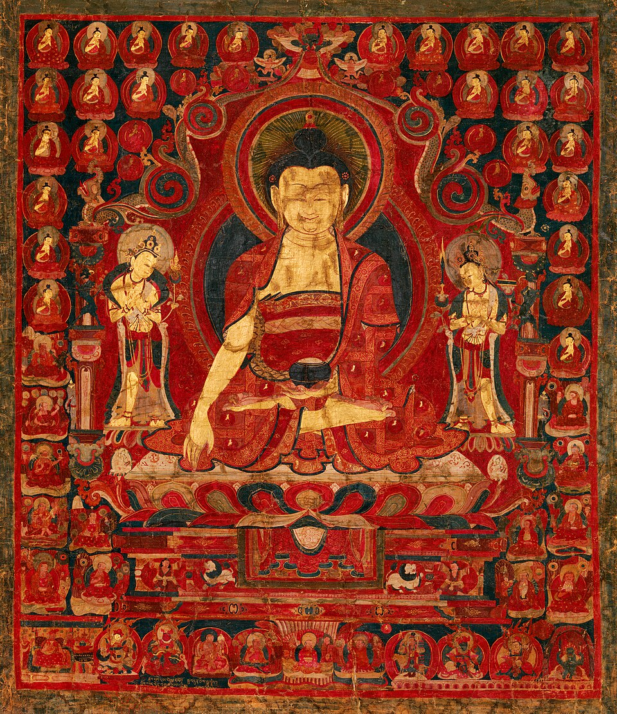
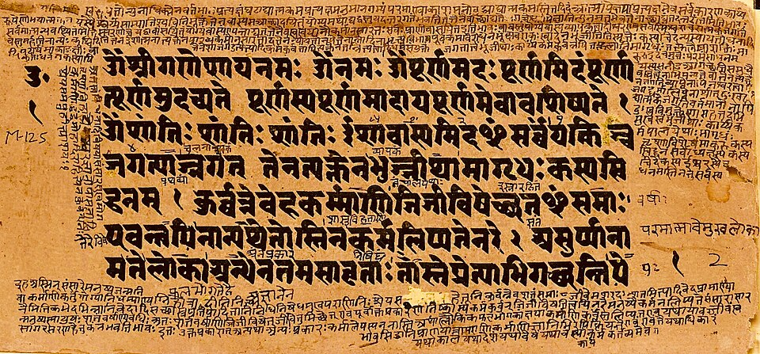
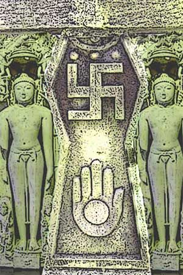
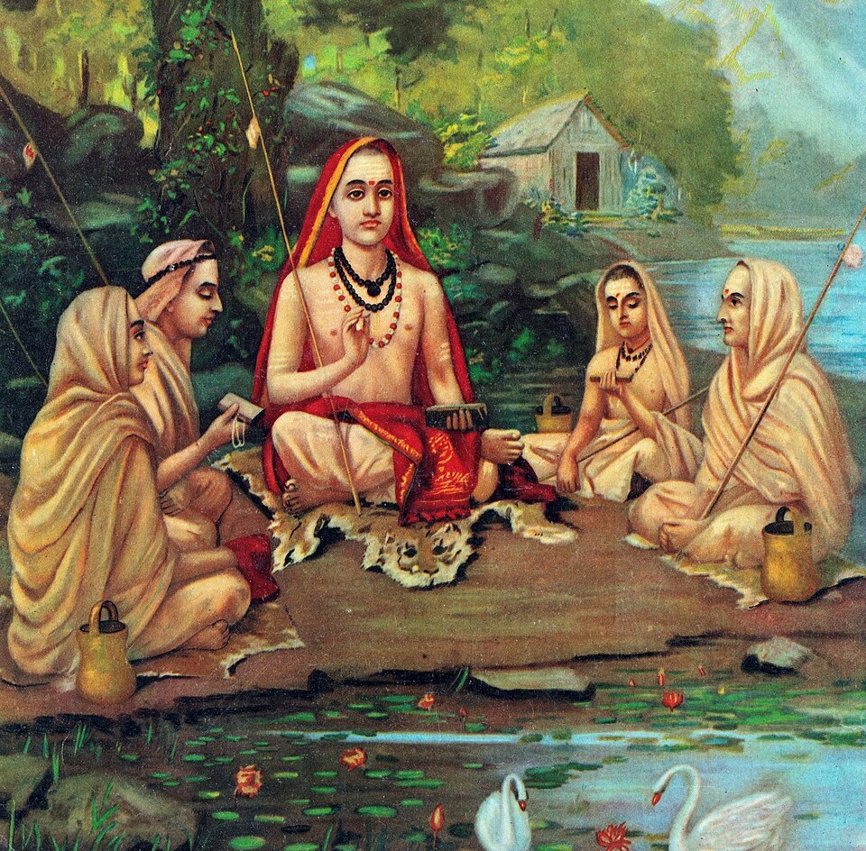
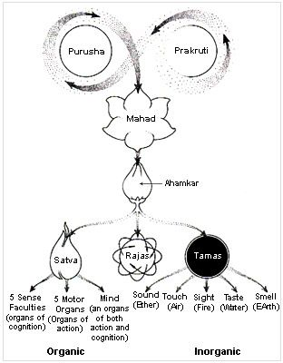
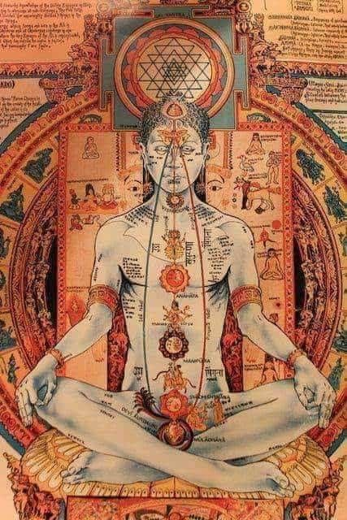
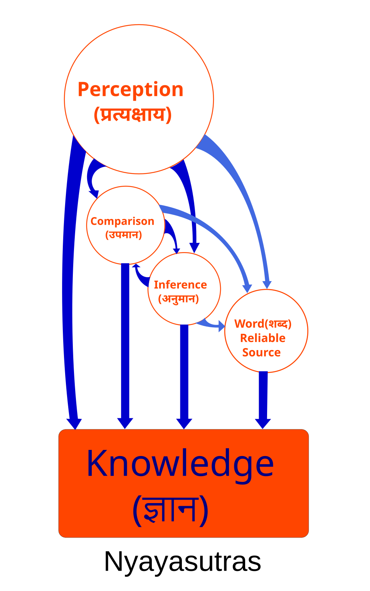
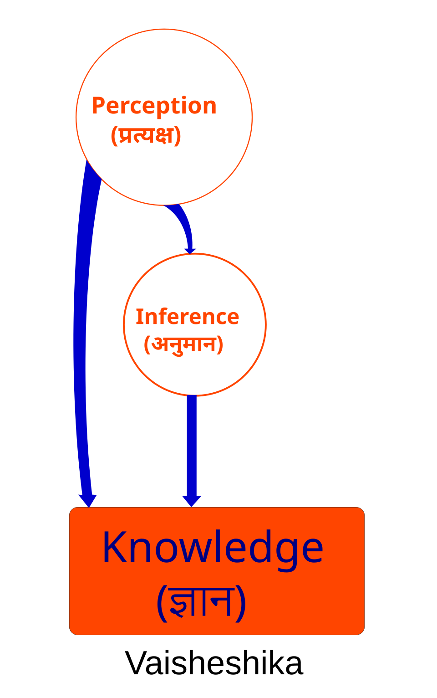
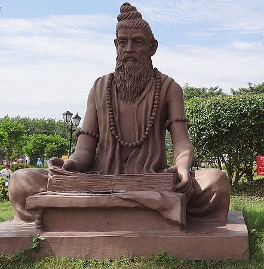

A detailed exploration of India's philosophical schools, including
some of the oldest traditions in the world—examining how they
approached questions of what truly matters, how one ought to live, and
why their ideas continue to remain influential today.
Buddhism

Buddhism teaches that suffering arises from attachment and can be
overcome by following the Middle Way.
Buddhism is an ancient, heterodox (Nastika) Indian philosophy and
religion that originated in the 6th century BCE, founded by Siddhartha
Gautama, the Buddha. Moving away from the extreme asceticism and
orthodox rituals of his time, the Buddha taught a "Middle Way" focused
on direct realization and personal spiritual development. The core of
early Buddhism is an empirical and psychological approach to
understanding the nature of human suffering (Dukkha) and the path to
extinguishing it, ultimately leading to the state of Nirvana.
Over the centuries, Buddhism expanded widely out of the Indian
subcontinent and across Asia, developing into various major branches,
primarily Theravada, Mahayana, and Vajrayana. While these schools differ
in rituals, cultural expressions, and specific metaphysical views, they
all share the foundational teachings of the Buddha. Instead of relying
on a creator god or an eternal soul, Buddhist philosophy uniquely
emphasizes impermanence, dependent origination, and the transformative
power of mindfulness, ethical conduct, and meditation.
Key Principles
The Four Noble Truths — acknowledging the reality of
suffering, its cause (craving/attachment), its cessation, and the path
leading to its cessation
The Noble Eightfold Path — a practical guide of
ethical conduct, mental discipline, and wisdom used to achieve
enlightenment
Anatta (No-Self) — the concept that there is no
permanent, unchanging soul or self in any living being
Anicca (Impermanence) — the doctrine that all
conditioned things are in a constant state of flux and change
Major Works
The Pali Canon (Tripitaka) — The foundational scriptures
The Dhammapada — A widely read collection of sayings of the
Buddha
The Lotus Sutra — A key text in Mahayana Buddhism
Influence
Buddhism profoundly shaped the cultural, philosophical, and social
landscapes of virtually all of Asia, from India to Japan. In modern
times, Buddhist practices—particularly mindfulness and Vipassana
meditation—have been heavily integrated into Western psychology and
medicine, becoming widely used therapies for stress reduction,
depression, and overall mental well-being.
Common Misconception
A frequent misconception is that Buddhists believe in "reincarnation" in
the same way Hindus do, where an eternal soul moves from body to body.
In reality, Buddhism teaches rebirth combined with the doctrine
of Anatta (no-self). It is viewed as a continuation of a karmic stream
of consciousness, like a flame being passed from one candle to another,
rather than a fixed soul transmigrating.
Vedanta

Vedanta focuses on the philosophical exploration of the ultimate
nature of reality, or Brahman, based on the final sections of the
Vedas.
Vedanta, which translates literally to "the end of the Vedas," is one of
the six orthodox (Astika) schools of Hindu philosophy. Rather than
focusing on the ritualistic early portions of the Vedas, Vedanta
concentrates on the philosophical teachings found in their concluding
texts, the Upanishads. It seeks to answer fundamental questions about
the nature of the ultimate reality (Brahman), the individual soul
(Atman), and the relationship between the two.
The philosophy of Vedanta is not a single, monolithic doctrine but an
umbrella term for several sub-schools that developed over the centuries
through rigorous debate. The foundational text of all Vedantic schools
is the Brahma Sutras, attributed to the sage Badarayana, which sought to
systematize Upanishadic thought. Different commentators interpreted
these sutras in vastly different ways, giving rise to distinct
traditions—ranging from strict non-dualism (Advaita) to qualified
non-dualism (Vishishtadvaita) and strict dualism (Dvaita).
Key Principles
Brahman — the ultimate, infinite, unchangeable
reality that is the source of the universe
Atman — the true self or inner soul of an individual
Samsara & Karma — the cycle of birth, death, and
rebirth, driven by the cosmic law of cause and effect based on one's
actions
Moksha — the ultimate liberation from Samsara,
achieved through the realization of the true nature of reality
Major Works
The Upanishads — The concluding philosophical texts of the
Vedas
The Brahma Sutras — Badarayana
The Bhagavad Gita — The spiritual synthesis of Hindu
philosophy
Influence
Vedanta is arguably the most dominant and culturally pervasive
philosophy in modern Hinduism. In the 19th and 20th centuries, figures
like Swami Vivekananda brought "Neo-Vedanta" to the West, heavily
influencing global spiritual movements, the New Age movement, and the
modern interpretation of yoga and meditation.
Common Misconception
Vedanta is often mistakenly thought of as a single philosophical view.
In reality, it is a highly diverse tradition containing fierce internal
debates. While Advaita Vedanta (non-dualism) is the most famous
globally, schools like Dvaita (dualism, teaching that God and the soul
are eternally distinct) are equally vital to Vedantic history and
millions of practitioners.
Jainism

Jainism prescribes a path of non-violence and multiplicity of views as
the supreme way to liberate the soul.
Jainism is an ancient, independent Sramana tradition of India that
emphasizes complete non-violence and asceticism. It is guided by the
teachings of 24 spiritual exemplars called Tirthankaras, with the
historical Mahavira (the 24th Tirthankara, a contemporary of the Buddha)
solidifying its doctrines in the 6th century BCE. Jain philosophy
revolves around the profound belief that every living being—from humans
and animals to plants and microscopic organisms—has a soul, and that the
universe is governed by an independent cosmic reality without a creator
deity.
The core objective in Jainism is to liberate the soul (Jiva) from the
bondage of Karma. Unlike other traditions where Karma is an abstract
moral law, Jainism views Karma as a physical, microscopic substance that
sticks to the soul due to passions and violent actions, weighing it down
in the cycle of rebirth. Liberation is achieved through intense
self-control, fasting, meditation, and a rigorous ethical code that
influenced various aspects of Indian culture and diet.
Key Principles
Ahimsa (Non-violence) — the supreme principle of
causing absolutely no harm to any living creature in thought, word, or
deed
Anekantavada (Many-sidedness) — the principle that
truth and reality are complex and have multiple aspects, fostering
profound intellectual tolerance
Aparigraha (Non-attachment) — limiting possessions
and desires to remain detached from worldly illusions
Jiva and Ajiva — the strict dualism between the
conscious soul (Jiva) and non-living matter (Ajiva)
Major Works
The Agamas — The original canonical texts based on Mahavira's
teachings
Tattvartha Sutra — Umaswati (a foundational systematized text
accepted by all sects)
Samayasara — Kundakunda
Influence
Jainism's principle of Ahimsa heavily influenced the cultural evolution
of vegetarianism in India. More globally, Jain philosophy directly
inspired Mahatma Gandhi's concept of Satyagraha (non-violent
resistance), which subsequently influenced civil rights movements around
the world, including that of Martin Luther King Jr.
Common Misconception
Jainism is frequently misunderstood as a reform sect of Hinduism or an
offshoot of Buddhism. In truth, Jainism is an entirely independent and
extremely ancient religion, with roots in the pre-Vedic Sramana
(ascetic) traditions of India, possessing its own unique cosmology,
epistemology, and soteriology.
Advaita Vedanta

Advaita Vedanta asserts absolute non-dualism: the individual soul and
the ultimate universal reality are fundamentally one.
Advaita Vedanta is arguably the most famous and globally influential
sub-school of the broader Vedanta tradition. Consolidated and
systematized by the 8th-century philosopher Adi Shankara, "Advaita"
literally translates to "not-two" or non-dualism. It proposes a radical,
uncompromising monism: Brahman, the absolute reality, is the only thing
that truly exists. The universe, in all its multiplicity, is an
appearance or an empirical reality rather than an absolute one.
According to Advaita, the individual's suffering and feeling of being
trapped in the cycle of Samsara is entirely due to Avidya (ignorance) of
their true identity. Through study, philosophical inquiry, and deep
meditation (Jnana Yoga), an individual can lift the veil of Maya
(illusion). Upon doing so, one realizes that the Atman (the innermost
self) is not merely a part of God, but is perfectly identical to Brahman
itself. The ultimate realization is summed up in the phrase "Aham
Brahmasmi" (I am Brahman).
Key Principles
Non-Dualism — the absolute oneness of Atman
(individual self) and Brahman (ultimate reality)
Maya — the cosmic illusion or power that makes the
singular, infinite Brahman appear as the multifaceted, changing
universe
Avidya — spiritual ignorance that causes humans to
identify with their physical body and mind rather than their true,
infinite self
Jnana Yoga — the path of knowledge and wisdom as the
primary means to liberation
Major Works
Bhashyas (Commentaries) on the Brahma Sutras, Upanishads, and
Bhagavad Gita — Adi Shankara
Vivekachudamani (Crest-Jewel of Discrimination) — Adi
Shankara
Ashtavakra Gita — A classic text of Advaita philosophy
Influence
Advaita Vedanta deeply impacted Indian religious thought, acting as a
unifying philosophical framework for various Hindu sects. In the modern
era, it became the primary lens through which Western intellectuals
(such as Schopenhauer and Aldous Huxley) understood Indian philosophy,
forming the backbone of the "Perennial Philosophy."
Common Misconception
The concept of "Maya" is often mistakenly translated to mean that the
physical world is entirely "fake" or "does not exist." Advaita actually
teaches a tiered view of reality. The world has "empirical reality"
(Vyavaharika)—it is very real to us while we live in it. It is only
called Maya because it lacks "absolute reality" (Paramarthika), as it is
temporary and constantly changing, unlike the eternal Brahman.
Zen Buddhism
Zen emphasizes direct, experiential realization of enlightenment
through meditation, bypassing heavy theoretical doctrine.
Zen Buddhism is a branch of Mahayana Buddhism that traces its roots
directly back to the Indian practice of Dhyana (meditation).
According to tradition, it was brought to China in the 5th century CE by
the Indian monk Bodhidharma, where it evolved into the
Chan school by blending with native Chinese Taoist principles.
It eventually migrated to Japan, where it became known as Zen.
Zen distinguishes itself by a profound distrust of language, scriptures,
and theoretical philosophy as a means to truth, relying instead on
direct, intuitive insight.
Zen practice revolves around the belief that all beings inherently
possess Buddha-nature, and enlightenment (Satori or Kensho) is not
something to be built up over time, but a sudden awakening to what is
already there. This is pursued through rigorous monastic discipline,
everyday mindfulness, seated meditation (Zazen), and sometimes the use
of mind-bending paradoxes (Koans) designed to exhaust the logical
intellect and trigger a breakthrough into pure awareness.
Key Principles
Zazen — seated meditation, the absolute core of Zen
practice, focusing on breath and posture to settle the mind
Koan Practice — the contemplation of paradoxical
statements or stories (e.g., "What is the sound of one hand
clapping?") to short-circuit logical thought
Mindfulness in Action — treating everyday tasks, like
sweeping or making tea, as profound opportunities for spiritual
practice
Direct Transmission — the passing of wisdom directly
from the mind of the master to the mind of the student, outside of
written scriptures
Major Works
The Platform Sutra — Huineng (6th Patriarch of Chan)
The Gateless Gate (Mumonkan) — A collection of Koans
Shobogenzo — Eihei Dogen (Founder of Japanese Soto Zen)
Influence
Zen has had a monumental impact on Japanese arts, including tea
ceremony, calligraphy, rock gardening, and martial arts, by emphasizing
simplicity, spontaneity, and presence. In the 20th century, Zen deeply
influenced Western modernism, the Beat Generation (like Jack Kerouac and
Gary Snyder), and contemporary minimalist design.
Common Misconception
A popular misconception in the West is that Zen is about "chilling out"
or making the mind totally blank and empty of all thoughts. In reality,
Zen is an intensely disciplined and highly alert state of consciousness.
It is not about turning off the mind, but rather observing thoughts
without attachment and remaining completely present in the "here and
now."
Samkhya

Samkhya is an ancient dualistic school that explains the universe
through the interplay of pure consciousness and material nature.
Samkhya is one of the oldest and most intellectually influential of the
six orthodox (Astika) schools of Hindu philosophy. Attributed to the
ancient sage Kapila, Samkhya is fundamentally a system of rational
enumeration and categorization. It asserts a strict, uncompromising
dualism, arguing that reality consists of two entirely distinct, eternal
principles: Purusha (pure, observing consciousness) and
Prakriti (matter, nature, or the physical universe).
According to Samkhya, Purusha is infinite, passive, and completely
detached, while Prakriti is active, dynamic, and made up of three
fundamental qualities called Gunas (Sattva/balance, Rajas/activity,
Tamas/inertia). When consciousness becomes entangled with matter, the
illusion of an ego or "self" is born, leading to human suffering.
Liberation (Kaivalya) is achieved through profound analytical knowledge,
realizing that one's true identity is the untouched Purusha, completely
separate from the mechanical workings of Prakriti.
Key Principles
Purusha — unmanifest, pure, eternal consciousness
that observes but does not act
Prakriti — the primal material matrix from which the
entire physical and mental universe evolves
The Three Gunas — the fundamental forces of nature
(Sattva, Rajas, Tamas) whose imbalance causes the universe to manifest
Kaivalya — absolute liberation achieved when
consciousness disentangles itself from matter through perfect
discrimination
Major Works
Samkhya Karika — Ishvarakrishna (the oldest surviving
authoritative text)
Samkhya Sutras — Traditionally attributed to Kapila
Influence
Samkhya is incredibly foundational to Indian thought. It provided the
complete metaphysical and psychological framework for the Yoga school of
Patanjali. Additionally, its theory of the three Gunas and its cosmology
heavily influenced Ayurveda (traditional Indian medicine) and the
narrative structures of the Mahabharata and Bhagavad Gita.
Common Misconception
Because Samkhya is an orthodox Hindu philosophy, it is often assumed to
be theistic. However, classical Samkhya is essentially an atheistic or
non-theistic system. It explicitly argues that a creator God (Ishvara)
is unprovable and metaphysically unnecessary, as the interplay between
Purusha and Prakriti is entirely sufficient to explain the evolution of
the universe.
Yoga

Yoga is a systematic methodology for silencing the fluctuations of the
mind to realize one's true spiritual essence.
While known worldwide today as a physical discipline, the classical
Indian philosophical school of Yoga is a profound system of psychology
and spirituality. Codified by the sage Patanjali in his Yoga Sutras
around the 2nd century BCE, Yoga serves as the practical, experiential
counterpart to the theoretical framework of Samkhya. Where Samkhya
provides the map of consciousness and matter, Yoga provides the exact
physical and mental techniques required to navigate it.
Patanjali defines Yoga simply as "Chitta Vritti Nirodha"—the cessation
of the fluctuations of the mind. To achieve this profound state of
stillness, Patanjali outlines the Ashtanga (Eight-Limbed) path. This
methodical approach starts with external ethics and physical discipline,
slowly moving inward toward breath control, withdrawal of the senses,
deep concentration, and ultimately Samadhi (total meditative
absorption), where the illusion of the ego vanishes.
Key Principles
Ashtanga (The Eight Limbs) — a progressive path
including Yamas (ethics), Niyamas (self-discipline), Asana (posture),
Pranayama (breath), Pratyahara (sense withdrawal), Dharana
(concentration), Dhyana (meditation), and Samadhi (absorption)
Chitta Vritti Nirodha — calming the mind's chaotic
"whirlpools" to see reality clearly
Ishvara Pranidhana — surrender to a supreme
consciousness or divine ideal to aid in removing the ego
Major Works
The Yoga Sutras — Patanjali
Vyasa Bhashya — The canonical commentary on the Yoga Sutras
Hatha Yoga Pradipika — A later medieval text focusing on the
physical aspects of the tradition
Influence
The Yoga school's meditative framework influenced almost every other
spiritual tradition in India, including Buddhism and Jainism. Today, the
physical aspect of Yoga (Asana) has sparked a multi-billion-dollar
global health and wellness movement, while its meditative techniques
have been secularized into the modern mindfulness movement.
Common Misconception
The most pervasive modern misconception is that Yoga is primarily a
physical workout or stretching routine. In classical Yoga philosophy,
Asana (physical posture) is only one of the eight limbs,
intended merely to prepare the body to sit still for long periods of
meditation. The ultimate goal of Yoga is not physical fitness, but
spiritual liberation (Moksha).
Nyaya

Nyaya is the Indian school of logic and epistemology, arguing that
acquiring valid knowledge is the key to liberation.
Nyaya is the orthodox Indian school of logic, epistemology, and debate.
Founded by the sage Gautama (also known as Aksapada), it proposes that
human suffering is fundamentally a result of ignorance and flawed
reasoning. According to Nyaya, the only way to attain liberation
(Moksha) is by obtaining absolutely valid knowledge about reality, the
soul, and the universe. To this end, the school developed a rigorously
systematic method of reasoning and analyzing evidence.
The core of Nyaya philosophy is its theory of Pramanas (sources
of valid knowledge). Nyaya asserts that we can only know the truth
through four reliable methods: Perception, Inference, Comparison, and
Valid Testimony. The school spent centuries refining the rules of
logical syllogism, debate, and identifying logical fallacies. By
perfecting the mind's ability to reason, the Nyaya philosopher aims to
dispel false ego and attachment, leading to spiritual release.
Key Principles
The Four Pramanas — Pratyaksha (Perception), Anumana
(Inference), Upamana (Comparison/Analogy), and Shabda (Testimony of
reliable experts)
Logical Realism — the belief that the external world
exists independently of our minds and can be accurately known through
logic
Apavarga (Liberation) — the cessation of suffering
achieved through right knowledge, leading to the soul becoming
entirely free from pain and pleasure
Major Works
Nyaya Sutras — Aksapada Gautama
Nyaya Bhashya — Vatsyayana (an essential early commentary)
Tattva Chintamani — Gangesha Upadhyaya (which founded the
"Navya-Nyaya" or New Logic school)
Influence
Nyaya became the gold standard for intellectual debate in India. Its
vocabulary, logical structures, and rules of engagement were adopted by
nearly all other philosophical schools (including Buddhists and Jains)
when they debated each other. In modern times, Navya-Nyaya has drawn
interest from Western mathematical logicians and linguists.
Common Misconception
Because it is so heavily focused on intense logical analysis and
argumentation, it is often misunderstood as purely secular or academic
logic, similar to the Aristotelian tradition in the West. In reality,
Nyaya is a profoundly spiritual school; it views logic not as an end in
itself, but strictly as a necessary tool for achieving spiritual
salvation.
Vaisheshika

Vaisheshika is an ancient system of natural philosophy and atomism
that categorized the physical universe into its most fundamental
parts.
Vaisheshika is the ancient Indian school of naturalism and
proto-science, closely allied with the Nyaya school of logic. Founded by
the sage Kanada, Vaisheshika is primarily concerned with physics,
metaphysics, and understanding the fundamental building blocks of
reality. It posits an independent, objective universe and seeks to
classify everything that exists, can be known, and can be named into an
exhaustive taxonomy.
The most famous contribution of Vaisheshika is its ancient atomic
theory. Kanada argued that matter cannot be divided infinitely;
eventually, one must reach an indivisible, indestructible particle,
which he called the Paramanu (atom). According to Vaisheshika,
all physical objects in the universe are formed by the combination of
atoms of the four basic elements: earth, water, fire, and air. Like
other orthodox schools, it maintained that fully understanding the
physical universe and the distinct nature of the soul leads to ultimate
liberation.
Key Principles
Atomism (Paramanu-vada) — the doctrine that the
universe is made of indestructible, indivisible elemental atoms
Padarthas (Categories of Being) — the classification
of all existence into Substance, Quality, Action, Universality,
Particularity, and Inherence
Empiricism — the reliance on perception and inference
as the only two valid sources of knowledge (differing slightly from
its sister school, Nyaya)
Major Works
Vaisheshika Sutras — Kanada
Padarthadharmasamgraha — Prashastapada (a foundational
exposition of Vaisheshika metaphysics)
Influence
Vaisheshika served as the early "physics" of ancient India. Over time,
its metaphysical categories and atomic theory became so deeply
integrated with the logical methodology of the Nyaya school that the two
essentially merged into a single system known as Nyaya-Vaisheshika,
shaping the analytical framework for all later Indian scientific and
philosophical thought.
Common Misconception
A common misconception is that ancient Indian philosophy was entirely
mystical and unconcerned with the material world. Vaisheshika directly
contradicts this, proving that ancient India possessed a highly
rigorous, mechanistic, and analytical framework for understanding
physics, chemistry, and the natural world long before modern science.
Mimamsa
Mimamsa emphasizes the profound power of language, ritual action, and
the strict interpretation of the Vedas.
Mimamsa (specifically Purva Mimamsa) is the orthodox school most closely
tied to traditional Hindu ritualism. Founded by the sage Jaimini, it was
developed specifically to provide a rigorous philosophical defense for
the rituals found in the early parts of the Vedas (the Karma-kanda).
Mimamsa philosophers were deeply concerned with hermeneutics (the theory
of interpretation) and the philosophy of language, seeking to establish
rules to perfectly understand and execute Vedic instructions.
Unlike Vedanta, which focuses on mystical knowledge and the renunciation
of action, Mimamsa argues that Dharma (duty and righteous
action) is the supreme purpose of human life. The school believes the
Vedas are eternal, unauthored (Apaurusheya), and absolutely infallible.
They posit that properly executing Vedic rituals generates an unseen
cosmic force called Apurva, which guarantees the eventual
realization of cosmic order and heavenly rewards.
Key Principles
Supremacy of Dharma — the belief that right action
(specifically Vedic rituals and duties) is paramount over mystical
knowledge or asceticism
Eternality of the Vedas — the doctrine that the Vedas
were not created by humans or even God, but are the eternal
sound-fabric of the universe
Apurva — the invisible, accumulating spiritual
mechanism that links a ritual action to its future fruit or result
Philosophy of Language — the assertion that words and
their meanings have an eternal, inherent connection, not just a
conventional one
Major Works
Mimamsa Sutras — Jaimini
Shabara Bhashya — Shabara (the foundational commentary)
Slokavartika — Kumarila Bhatta
Influence
Mimamsa’s incredibly detailed rules for interpreting texts became the
absolute foundation for Hindu law (Dharma Sastras) and jurisprudence.
Furthermore, their deep investigations into semantics, grammar, and how
language conveys meaning heavily influenced ancient linguistic theories
and debates across all of Asia.
Common Misconception
Modern readers often view Mimamsa as just "mindless ritualism." In
reality, Mimamsa contains some of the most sophisticated epistemology
and linguistic philosophy in history. Their defense of rituals was not
superstitious, but based on a highly complex theory of language, sound,
and the mechanics of cause-and-effect in the universe.
Charvaka

Charvaka is the ancient school of materialism and skepticism,
rejecting religious dogma in favor of empirical evidence.
Charvaka (also known as Lokayata) is the most famous heterodox (Nastika)
school of Indian materialist philosophy. Traditionally attributed to the
ancient teacher Brihaspati, it stood in stark opposition to almost every
other Indian philosophical system. The Charvakas entirely rejected the
authority of the Vedas, the concept of a soul, the cycle of
reincarnation, and the existence of gods, viewing religion essentially
as a fraud invented by priests to make a living.
The epistemology of Charvaka is fiercely empirical. They argued that
direct perception (Pratyaksha) is the only reliable source of
knowledge. They rejected inference as a valid way to establish universal
truths, famously pointing out the problem of induction long before
Western philosophers did. Because they believed consciousness was merely
a byproduct of physical matter (like intoxication arises from fermenting
grain), they concluded that death is the absolute end. Therefore, the
highest goal of life was simply to maximize human happiness and minimize
pain.
Key Principles
Strict Empiricism — the belief that direct physical
perception is the only valid way to know anything
Materialism — the doctrine that everything in the
universe, including the mind and consciousness, is made of the four
physical elements (earth, water, fire, air)
Rejection of the Afterlife — the assertion that the
soul dies with the body, and concepts like Karma and Moksha are
illusions
Ethical Hedonism — the philosophy that a good life
consists in enjoying worldly pleasures and avoiding suffering while we
are alive
Major Works
Brhaspati Sutras — The foundational text (unfortunately lost
to history)
Tattvopaplavasimha — Jayarashi Bhatta (A surviving text
sympathetic to radical Charvaka skepticism)
Note: Much of Charvaka philosophy is known only through the texts
of rival schools (like Buddhists, Jains, and Vedantins) who recorded
Charvaka arguments in order to refute them.
Influence
While Charvaka did not survive as an organized school, its presence was
vital to the history of Indian thought. By aggressively challenging
dogmas, demanding empirical proof, and critiquing logical inferences,
the Charvakas forced all the orthodox schools to significantly sharpen
their own logical tools and defend their spiritual claims with deep
intellectual rigor.
Common Misconception
Because their works were largely destroyed and their views recorded by
their enemies, the Charvakas are often mischaracterized as reckless,
immoral hedonists who just wanted to drink and feast. In truth, they
possessed a highly sophisticated and rigorous epistemological framework,
arguing that ethical behavior was a natural, pragmatic requirement for a
harmonious society, rather than a cosmic religious commandment.
Explore the Philosophies of East Asia
India's philosophical traditions developed alongside other major
intellectual traditions across Asia. Explore Chinese and Japanese
schools of thought, including Confucianism, Daoism, Zen, and other
traditions concerned with human nature, harmony, knowledge, and the way
of life.